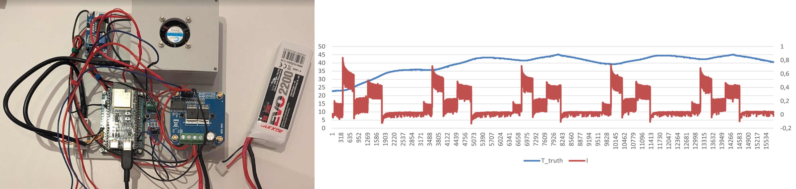

Temperature Estimation of a Peltier Element Using TCN

The temperature dynamics of Peltier elements have significant delay, nonlinear effects, and hysteresis, making accurate control difficult. Such time-dependent systems benefit from temporal models. I use a temporal convolutional network (TCN) to estimate the temperature response from current input in real time, collecting experimental data and evaluating model accuracy and response speed.
Autonomous Navigation of a Mecanum-Wheel Robot

ROS is the de-facto framework for robotics with many reusable algorithms and tools. This project builds a ROS-based autonomous navigation system for a four-wheel mecanum robot as a research-ready platform. It integrates SLAM, path planning, obstacle avoidance, and object recognition. With a Google Coral USB accelerator, it achieves fast image processing and real-time control.
Reinforcement Learning Control of a Two-Wheeled Inverted Pendulum

Leveraging recent progress in physical AI, I apply reinforcement learning to balancing and trajectory tracking of a two-wheeled inverted pendulum. I designed and built the robot from chassis to electronics, and compare Kalman filter–based state estimation + PID control with RL-based control.